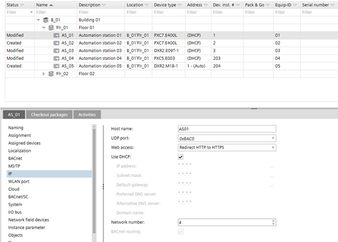

1. 设置用于 IP 通信的设备
在切换到 BACnet/SC 之前，必须先建立 IP 通信。

即使稍后添加设备，这些步骤始终是必要的。
1. Setting up the IP communication
- Go to Building.
- Open the Building structure task.
- In the building structure table, select a device.
- Open the Details tab.
- Configure the detail information of the device.

2. Establish network connection
- In the Common toolbar, select the arrow next to the Connect
 icon.
icon. - Select the Ethernet tab.
- Select the Target selection option IP.

- Click Connect.
- The IP communication is established and operational.
3. Find matching device type
- A network connection is established
 .
.
- Go to Startup.
- Open the Configure and download task.
- In the Engineered devices area, select the device.
- Right-click the device and select Find matching device type.
- The devices are listed in the Discovered devices tab.
- Select the device and click Assign.
- The device is assigned with the device type.
4. Download data to the device
- A network connection is established .
- Go to Startup.
- Open the Configure and download task.
- In the Engineered devices area, select the device.
Note: Multi-selection in is allowed. - Right-click the device and select Load > Full (device may restart).
- The current device data are downloaded.
5. Find matching serial number
- A network connection is established .
- Go to Startup.
- Open the Configure and download task.
- In the Engineered devices area, select the device.
- Right-click the device and select Find matching serial number.
- The devices are listed in the Discovered devices tab.